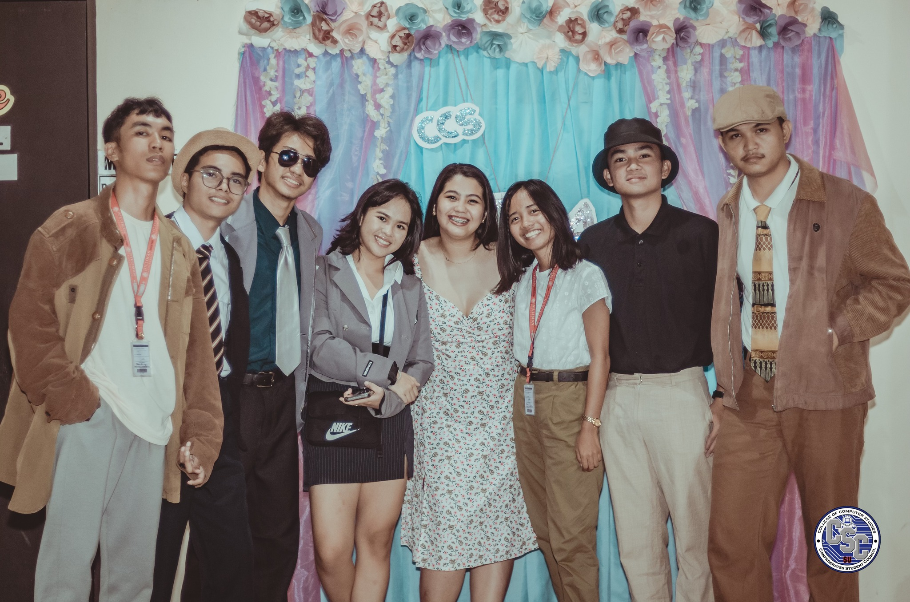
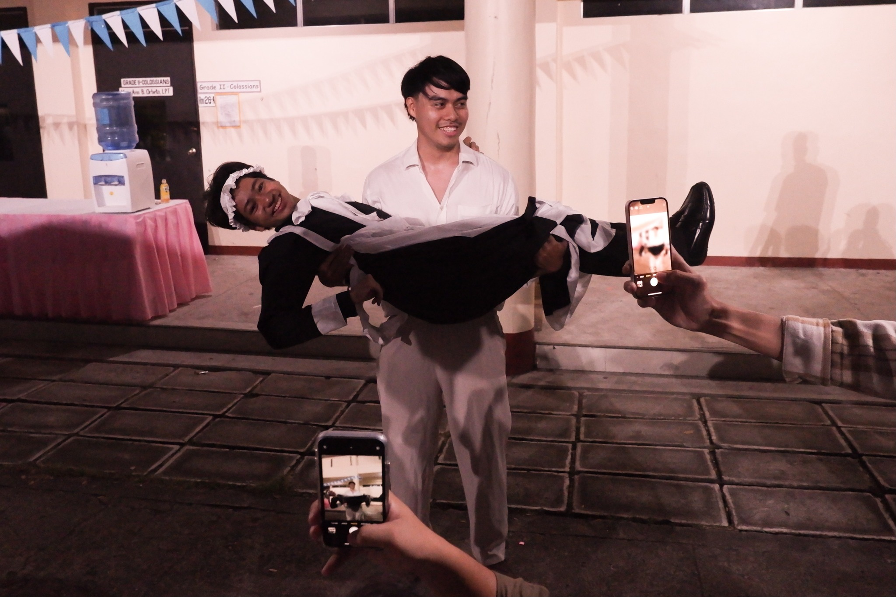

local_floristCCS ACQUAINTANCE PARTY
groups SUSG COMMITTEE ON STUDENT ORGANIZATIONS

The SU Experience of Ernest Rojo
The CCS Acquaintance Party, hosted by the Confederate Student Council (CSC), emerged as a lively event inviting all CCS students to join in for a bit of fun. The theme, "Tea Party," set the stage for a vibrant and unique gathering. Embracing the occasion with enthusiasm, I went all out, borrowing a blazer to match the over-the-top theme. As a newcomer to such events, the experience was genuinely awesome, marked by great people, engaging hosts, and an overall atmosphere of enjoyment. The party provided an opportunity for CCS students to come together and kick off the academic year with a memorable celebration.
Participating in the CCS Acquaintance Party proved to be a fantastic and memorable experience. The theme's over-the-top nature allowed for creative and lively expressions of individual styles, fostering a sense of camaraderie among students. While the multitude and duration of games tested the patience a bit, the overall atmosphere was one of joy and fun. The event marked a departure from the routine and introduced me to the vibrant social side of university life. The surprise after-party, orchestrated by the spirited 2nd Year BSIT student Pom, added an unexpected and exhilarating element to the celebration.
The CCS Acquaintance Party has left a positive impact, encouraging an active engagement in social events within the university community. The experience has inspired a greater openness to participate in future gatherings and celebrations. Moving forward, I look forward to embracing more opportunities to connect with fellow CCS students and contribute to the lively and social atmosphere that makes university life unique.
Because of the CCS Acquaintance Party, I am motivated to actively participate in social events and celebrations within the university. The lively atmosphere, engaging activities, and unexpected surprises have reinforced the importance of embracing the social side of university life. This experience has kindled a desire to contribute to the vibrant and communal spirit within the CCS community and beyond.
Note: Photos may be blurry or unclear prior to October 9, 2023 due to hardware issues

